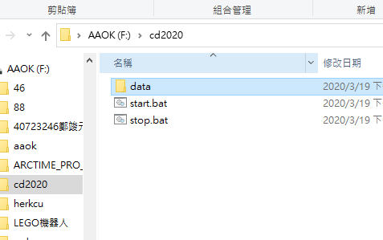

random grouping <<
Previous Next >> Four Wheel Car
portable system
text:
將可攜系統下的python 3.7.3系統更新至python 3.8.2
1.先去GOOGLE SEARCH PYTHON (點這下載)
2.下載Windows x86-64 executable installer (點這下載)
3.載完點並不要勾選pip選項，接著按下next選取放置資料夾
4.在隨身系統下新增放置資料夾cd2020，並在cd2020下新建資料夾data，data<py382<wscite432<portablegit
5.下載SciTE系統 full 64-bit download，下載完後解壓縮至data下的wscite432
6.在cd2020下建立新的start.bat及stop.bat

7.至SciTE系統更改start.bat及stop.bat


8.載入MSYS2 msys2-x86_64-20190524.exe 至data
9.載入PortableGit 64-bit Git for Windows Portable 至portablegit
10.裝入pip，另存新檔到data
11.測試將python3.8.2版本，將少的模組下載回來

random grouping <<
Previous Next >> Four Wheel Car